چند روز پیش یه رباتی رو توی توییتر دیدم با عنوان ربات فیواستار فارسی که یه تفاوت با بقیه ربات ها داشت و اونم این بود که ساعت فیواستار شدن یک توییت و مدت زمانی که طول کشیده اون توییت فیواستار بشه رو ریپلای میکنه.
نمونهای از ریپلای :
البته طبق بررسی هایی که انجام دادم الگوی اطلاع فیواستار اینجوری نبود و اینجوری بوده :
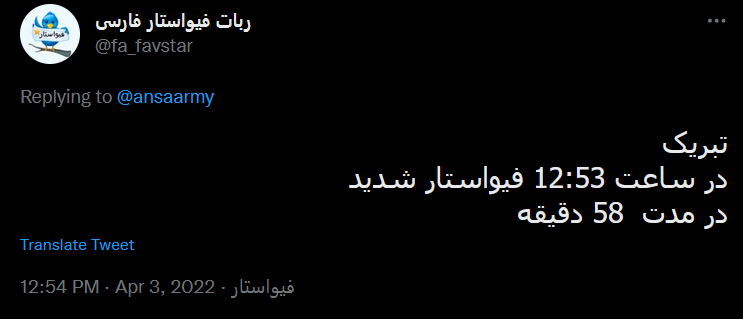
اما یه اتفاقی میافته! یک نفر توییتی میزنه در مورد فوت کردن مادرشون و این ریپلای در اینجا خیلی معنی بدی میده و ربات رو اصلاح میکنن :
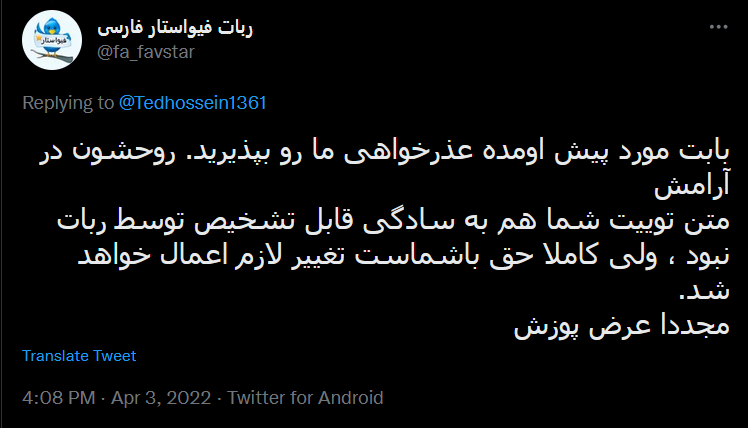
من برام جالب بود که این توییت ها رو جمعآوری کنم و یه تحلیل ساده روی این زمان ها انجام بدم. در مجموع ۳۷۵۸ ریپلای رو جمعآوری کردم. البته این اکانت تا الان ۱۶ هزار ریتوییت و ریپلای داشته و این نشون میده به دلایلی (احتمالا محدودیت API توییتر) به همه توییت ها ریپلای نمیده. این ۳۷۵۸ توییت رو ۲۰۷۹ نفر نوشتند که ۳۸ تا اکانت در حال حاضر suspend یا حذف شدند!نمودار زیر نشون میده توییت ها بیشتر در چه ساعتی از شبانهروز فیواستار شدند :
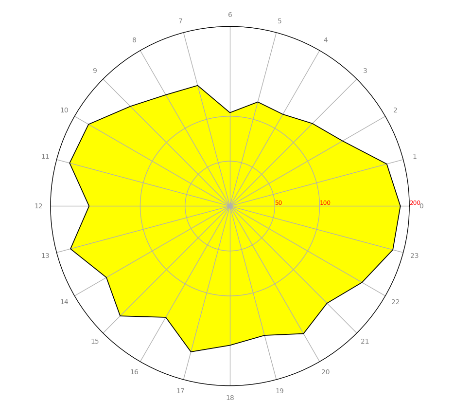
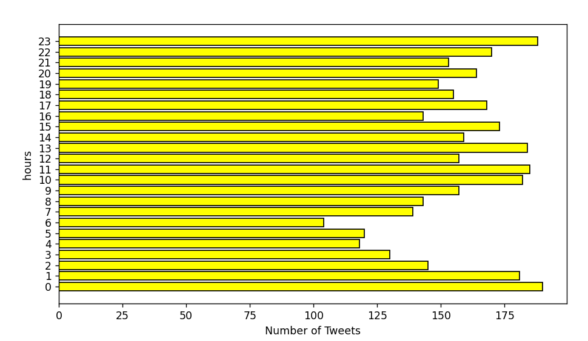
هیستوگرام زیر نشون میده فیواستار شدن چند دقیقه بعد از نگارش توییت اتفاق افتاده :
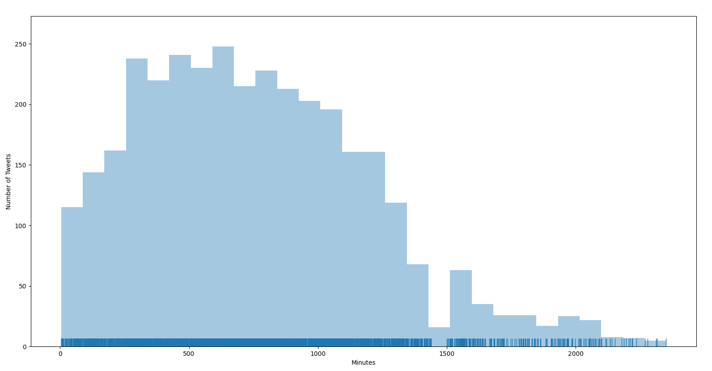
از نمودار بالا میشه متوجه شد که بیشتر توییت ها بین ۲۵۰ تا ۶۰۰ دقیقه طول کشیده تا فیواستار بشوند.الان میخوام بررسی کنم آیا رابطهای بین تعداد فالوور ها و مدت زمانی که طول میکشه تا توییت فیواستار بشه وجود داره یا نه؟ به نمودار زیر توجه کنید :
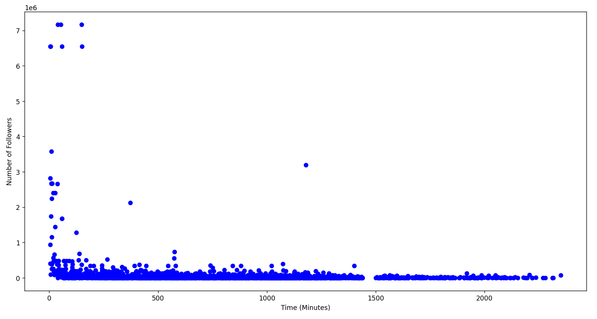
محور افقی (x) در نمودار بالا مدت زمانی رو نشون میده که طول کشیده تا توییت شخص فیواستار بشه و محور عمودی (y) نشون تعداد فالوور های اون شخص رو نشون میده. از نمودار بالا متوجه میشیم که تعداد فالوور ها ربط خاصی به مدت زمانی که طول کشیده تا توییت فیواستار بشه نداره. اون پایین نمودار بیشتر نقطه ها در یک راستا هستند. یعنی در یک رنج ثابت (مثلا بین ۱ تا ۱۰۰ هزار فالوور) میبینیم که یه نفر داریم که ۲۰ دقیقهای فیواستار شده و یه نفر دیگه ۲۰۰۰ دقیقهای! در در توییتر فعال باشید این موضوع رو زیاد میبینید که یه نفر مثلا با ۵۰۰ تا فالوور توییتش بیش از ۱۰ هزار لایک میشه و چیز عجیبی نیست! تصویر زیر هم همین نمودار بالاست فقط اونایی که بیشتر ۸۰۰ هزار فالوور داشتند رو حذف کردم (به جز یکی ?) :
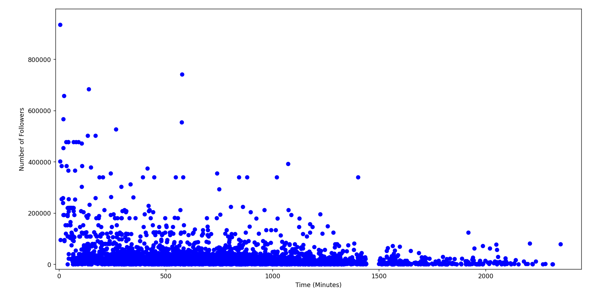
نمودار زیر هم هیستوگرام تعداد فالوور های افرادی که فیواستار شدند رو نشون میده :
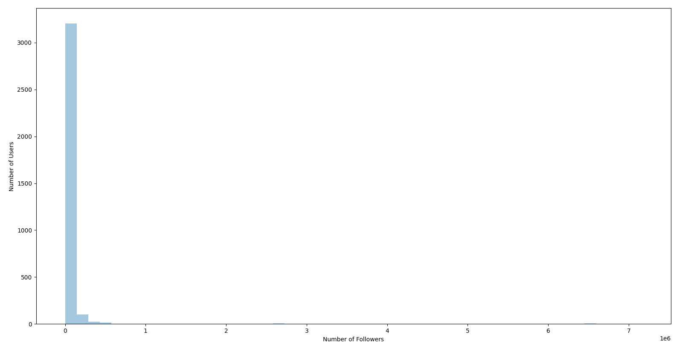
یه ذره نمودارش نافرمه نه؟! چرا؟ چون یه تعداد کمی از افراد وجود دارند که تعداد خییلی زیادی (بیش از ۱ میلیون) فالوور دارند و نمودار بالا رو خراب کردند. به همین دلیل من افرادی که بیشتر از ۱۵۰ هزار فالوور داشتند رو حذف کردم و مجدد نمودار رو رسم کردم :
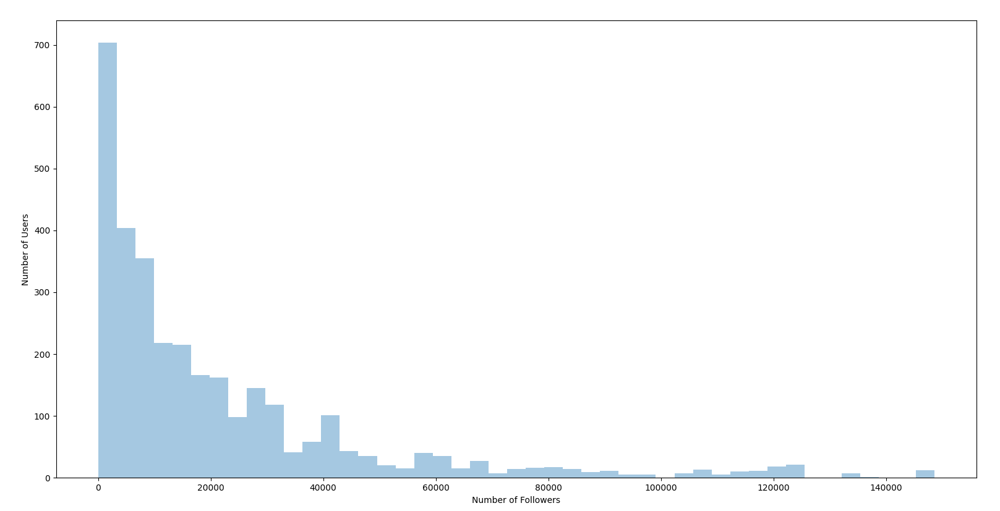
همونطور که در نمودار بالا مشاهده میکنید بخش عمدهای از افراد کمتر از ۱۰ هزار فالوور دارند! اگر بازم روی نمودار زوم کنیم و اونایی که بیشتر از ۱۰ هزار فالوور دارند رو هم حذف کنیم نتیجه به صورت زیر میشه :
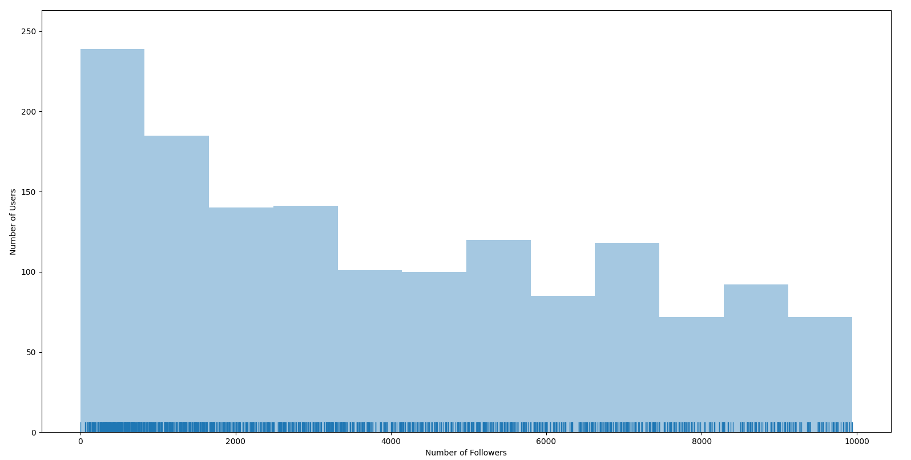
از نمودار بالا هم میشه دید که بخش عمدهای از این افراد هم کمتر از ۲۰۰۰ فالوور دارند! پس نتیجه اینکه اگر فالوور شما زیاده لزوما باعث نمیشه هر توییتی که میزنید فیواستار بشه و همچنین اگر فالوور کمی دارید لزوما باعث نمیشه توییت های شما هیچ وقت فیواستار نشه!حالا میخوام بررسی کنم چه رابطهای بین تعداد فالوور ها و فالوئینگ ها وجود داره؟! به نمودار زیر توجه کنید :
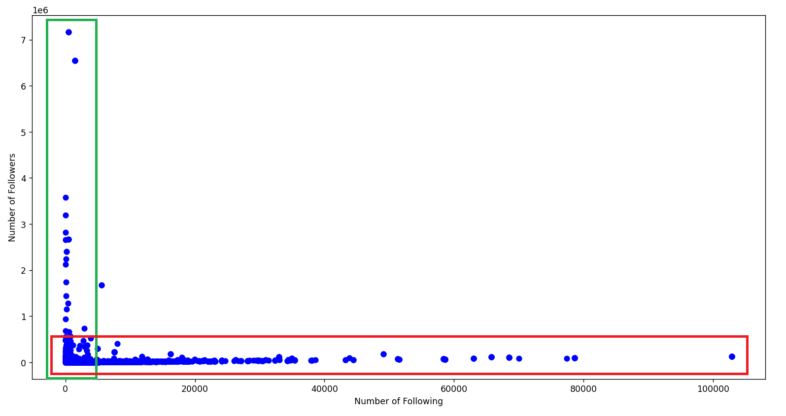
نقاطی که در باکس سبز رنگ قرار دارند، افرادی هستند که تعداد فالوور هاشون بیشتر (گاهی خیلی بیشتر) از تعداد فالوئینگ هاشونه! یعنی یه جورایی اینفلوئنسر هستند و اونایی که در باکس قرمز قرار دارند یعنی افراد زیادی رو فالو کردند ولی تعداد فالوور هاشون کمتر (گاهی خیلی کمتر) از فالوئینگ هاشونه! یعنی یه جورایی اکانت ناامن هستند!حالا میخوام تلاش کنم ببینم میتونم اکانت های ناامن رو پیدا کنم؟! پارامتر هایی که من در نظر میگیرم یکی join سال ۲۰۲۱ به بعده و اینکه تعداد فالوور ها و فالووئینگ ها تقریبا برابر باشه. join سال ۲۰۲۱ به بعد رو میشه با یه شرط ساده پیدا کرد اما تقریبا برابر یعنی چی؟فرض کنید یه نفر ۱۰۰۰ تا فالوور داره. اگر چند نفر رو فالو کرده باشه میشه تقریبا برابر؟! ۱۰۰ نفر؟ ۳۰۰ نفر؟! چه جوری اون مرز رو پیدا کنیم؟ من میام هیستوگرام رسم میکنم. مثلا هیستوگرام زیر رو برای اونایی که تعداد فالوور ها و فالوئینگ هاشون ۴ رقمیه رسم کردم :
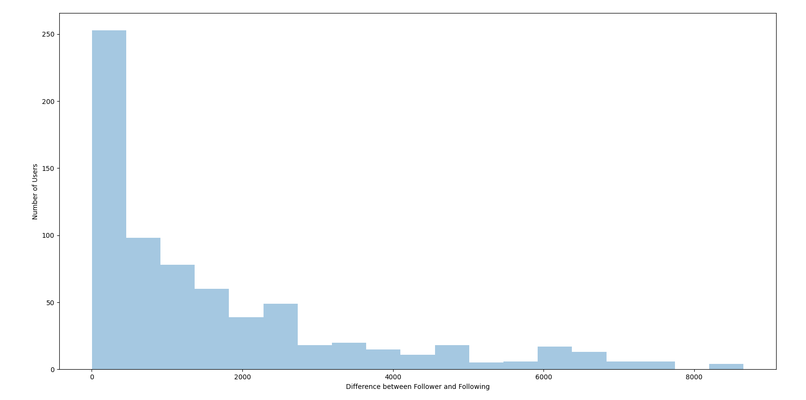
محور افقی اختلاف فالوور و فالوئینگ ها رو نشون میده و محور عمومی تعداد کاربران که اون اختلاف رو داشتند. اینجا تقریبا ۲۵۰ نفر رو داریم که اختلافشون کمتر از ۴۵۶ تاست. پس من مرز رو ۴۵۶ در نظر میگیرم. اگر همین کار رو برای بقیه هم انجام بدیم نتیجه این مرز به صورت زیر میشه :۳ رقمی : ۱۰۰۴ رقمی : ۴۵۶۵ رقمی : ۳۷۴۰۶ رقمی : ۳۰۲۷۹پس اگر تاریخ join رو ۲۰۲۱ به بعد و اختلاف ها رو به صورت بالا در نظر بگیرم نمودار نسبت فالوور به فالوئینگ به صورت زیر میشه که ۲۶۳ نفر هستند :
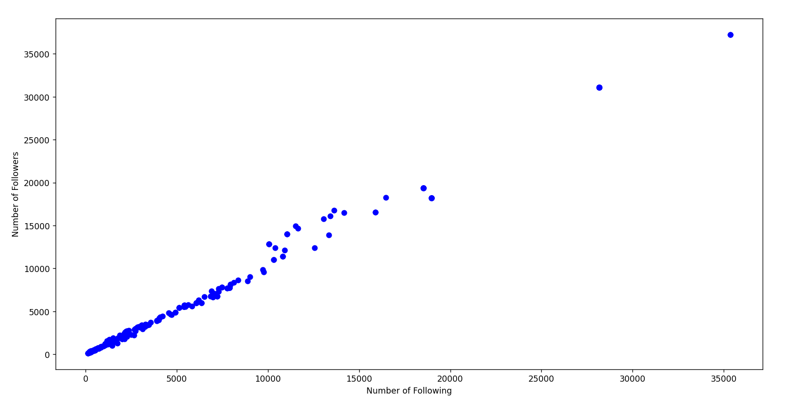
لیست این ۲۶۳ نفر رو در لینک زیر قرار دادم :
اگر تاریخ join رو 2022 در نظر بگیریم ۷۰ نفر میشن :
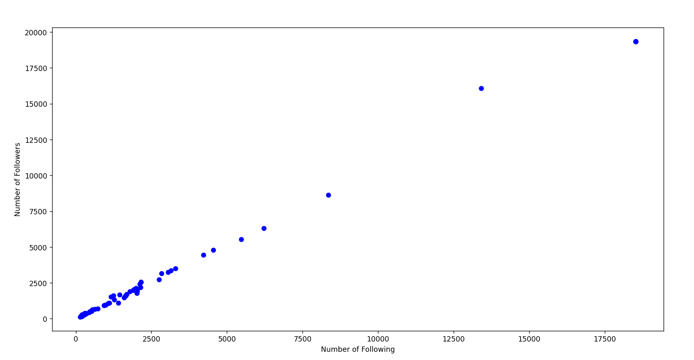
لیست این ۷۰ نفر رو در لینک زیر قرار دادم :
در دو لینک بالا فکر کنم فقط لازم باشه time رو توضیح بدم. time مدت زمانیه که طول کشیده توییتشون فیواستار بشه. به افرادی که در لیست های بالا هستند برچسب ناامن نمیزنم. فقط نتایج رو منتشر کردم. به خصوص اونایی که تعداد فالوور و فالوئینگ هاشون ۳ رقمیه رو خیلی نمیشه برچسب ناامن زد ولی به هر حال این نتایجی بود که من به دست آوردم!
nb.neighbours()
| title | date | |
|---|---|---|
| prev | باندهای بازیگری در ۲۵۰ فیلم برتر IMDb | ۱۴۰۱/۰۲ |
| next | گشت و گذاری در iFilm | ۱۴۰۱/۰۲ |